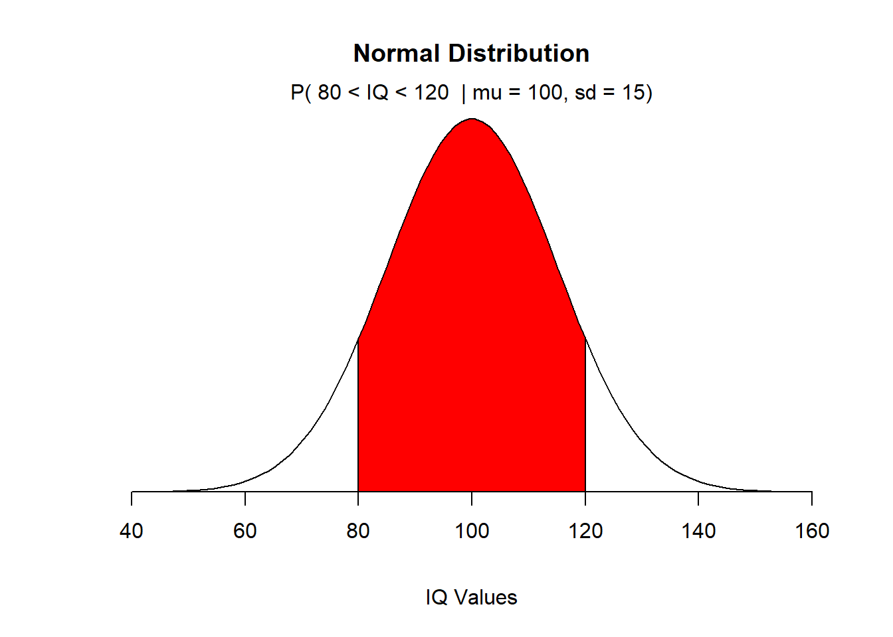

23 Maximum Likelihood
The primary source for the following lecture material are primarily derived from I.J. Myung’s paper “Tutorial on maximum likelihood estimation”. Journal of Mathematical Psychology 47 (2003) 90-100. The interested reader is directed to review this paper.
In this lecture we will understand an alternative to parameter estimation using least-squares estimation, maximum likelihood estimation (MLE).
MLE is a preferred method of parameter estimation in statistics and is a general parameter estimation approach, in particular in non-linear modeling and/or with non-normally distributed data. Because of the prevelance of non-normally distributed data in the natural sciences (e.g. data from counting, categorical data, skewed ratio data) an examination and familiarization of this approach is useful.
23.1 General Exprimental Approach
Because many phenomenon of interest are not directly observable, we formulate hypotheses to test and these hypothesis are stated in terms of probability using statistical models.
The goal of statistical modeling is to understand underlying processes by testing the viability (e.g. quality, robustness) of the model.
Our method:
- Specify a statistical model
- Collect data
- Evaluate how well the model fits the data by:
Parameter estimation
Evaluating goodness of fit
23.2 Two approaches to parameter estimation:
LSE (least-squares estimation), for normally-distributed data
MLE, a general approach for parameter estimation
23.3 The probability density function
The goal of data analysis is to identify the population that is most likely to have generated the sample - i.e. we will estimate the parameters of the candidate model that will produce these observations.
The data vector \(y = (y_1, y_2, ..., y_m)\) is a random sample from a population distributed in some unknown way.
Populations are identified using a probability distribution and unique values of the parameters - As the parameter changes in value, different probability distributions are generated.
Let \(f(y|w)\) denote the probability density function (PDF) that specifies the probability of observing data vector y given the parameter w.
The parameter \(w = (w_1, ..., w_k)\) is a vector defined on a multi-dimensional parameter space.
For example, if the PDF is normal, \(w = (\mu, \sigma)\)
If the PDF is a t distribution, \(w = (d.f.)\)
Different distributions are defined using different parameters (and different mathematical formulations), so w is distribution-specific.
If we have specified a distribution that has a certain set of parameters, for example:

We can use a given probability distribution and parameter set to determine the probability of obtaining a value in a population.
Example:
Children’s IQ scores are normally distributed with a mean of 100 and a standard deviation of 15. What is the probability of a randomly selected child having an IQ between 80 and 120?

In this case the area under the curve is 0.818 or 81.8% of the integral of the distribution from \(-\infty\) to \(+\infty\). So, if we take 100 random draws from the population of children’s IQs, we will get values of IQ > 80 and < 120, 81 to 82 times…
Let’s examine the statement:
\(p(80 < IQ < 120\) | \(\mu = 100, \sigma = 15) = 0.818\).
We are stating that the probability of randomly selecting an IQ observation the variable characteristics given the parameter values is 0.818.
If we are interested in finding probabilities of students with different variable characteristics (different IQ values), then we will change the left side of the equation.
For example:
\(p(IQ < 65\) | \(\mu = 100, \sigma = 15)\)
or
\(p(IQ > 120\) | \(\mu = 100, \sigma = 15)\)
The right side of the equation does not change because it describes the fixed shape of the distribution of the population that “creates” the observations. So when we are investigating probability of an event we are quantifying the integral of the curve for the given parameter set bounded by the left side of the equation. We change the left side to derive new probability values.

We can determine the probability of obtaining \(p(y_1, y_2, ..., y_m)\) | \(w)\) if the observations are independent.
Think about taking multiple random draws from the population described by the parameter set w. An analog here is thinking about coin flipping, the probability of realizing specific outcomes from multiple trials is determined by multiplication (e.g. probability of observing two “tails” flips is the product of the independent single observations).
So, the notation below is Pi (product) notation. This is used in mathematics to indicate repeated multiplication.
\(p(y_1, y_2, ..., y_m)\) | \(w) = p(y_1\)| \(w) \times p(y_2\)| \(w) \times ...p(y_n\)| \(w)\)
\(p(y_1, y_2, ..., y_m)\) | \(w) = \prod_{i = 1}^{n}{p(y_i | w)}\)
23.4 The likelihood function
Now we will discuss the likelihood function that is derived by considering that the data are fixed and that the shape of the (parent) distribution is random.
In this approach we are evaluating the inverse problem of the PDF. Specifically, given the observed data and a model of interest, we are interested in finding the unique parameter vector w, among all the possible combinations of parameters that is most likely to have produced the data.
We have already observed the data and now want to define the likelihood function by reversing the roles (i.e. what is random what is fixed) of the data vector y and the parameter vector w.
So, we focus on \(L(w|y)\). This represents the likelihood of the parameter w given the observed data y; and as such is a function of w.
So, the data are fixed, and we modify the parameter vector w (in the case of IQ, \(\mu\) and \(\sigma\))
Assume we have some vector of observed data y, these are sampled from some population, for now, assume we take a single value.
What is the likelihood that \(\mu = 100\) and \(\sigma = 15\) given our sampled IQ is \(y = 120\)?

What if we have a vector of observations \(n = 5\), with mean values centered on 120? So, we want to find the distribution parameters that maximize the likelihood. We still think that the normal distribution is the most appropriate distribution as a candidate distribution.
\(y = (100, 110, 120, 130, 140)\)